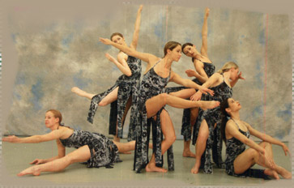
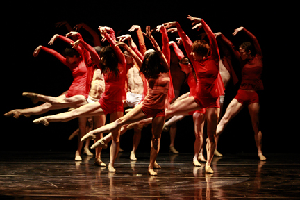
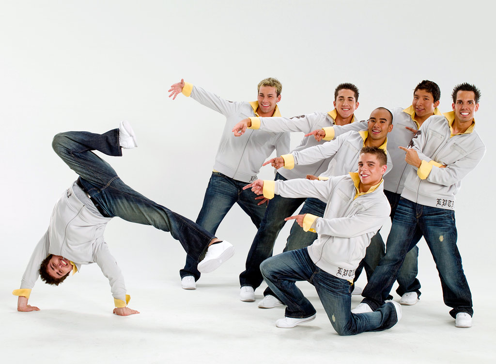

Moderan balet

Otkako je Ruski balet započeo revoluciju u baletu na početku 20. veka, nastavljeni su pokušaji da se slomi oblik model klasičnog baleta, tako da su njegove granice konstantno bivale zategnute, mutne i veoma nejasne. To se dešavalo za vreme eksplozije novog mišljenja i istraživanja na početku 20. veka, kada su igrači počeli da cene kvalitete pojedinaca (individua). Ono što će nastati kao posledica ovih promena danas nazivamo modernim baletom.
Kada govorimo o samoj definiciji savremenog baleta, reč savremen (contemporaine, contemporary) ne konstituiše jednu određenu kategoriju; ona pokriva ideju aktuelnog i u drugim umetničkim kategorijama kao što je to npr. savremena muzika. Ta aktuelnost podrazumeva igru od početka 20. veka, razlikujući moderan balet od savremenih igračkih tendencija koje su se tada razvijale. Međutim i dalje postoje nesporazumi kod istoričara, kritičara i analitičara oko upotrebe izraza moderan balet i savremena igra.
Naime, iako je savremena igra produkt ili produžetak moderne igre, ipak se period u kome se dešavala promena menja u zavisnosti od autora do autora. Neki su posmatrali modernu igru od njenih začetaka krajem 19. veka, dok su drugi njen početak pronalazili šezdesetih godina 20. veka sa nastavkom u postmodernoj igri. Neslaganje oko nove igre koja je nastajala, a bila je zaista drugačija od onog što se nazivao moderan balet, dovelo je do problema njenog kategorizovanja. Problem nije ležao samo u kategorizaciji naziva moderne igre nego i u potrebi igrača da ta razlika koju su osećali i igrali bude definisana, i zato je bilo neophodno prihvatiti naziv savremena igra. Novi talas, stil i oblik plesa nastao je kao potreba koreografa za sopstvenim znakom raspoznavanja.
Jazz dance

Džez ples (engl. Jazz dance) je moderna tehnika koja se bazira na baletskoj tehnici koja je dopunjena opuštenijim i slobodnijim plesnim elementima. Pozicije nogu u jazzu su malo zatvorenije nego u baletu ili potpuno zatvorene. U jazzu za razliku od baleta je dopušten veći stupanj stilske opuštenosti, i dok se balet igra isključivo uz klasičnu muziku, jazz dance obično prati pop ili bilo koja druga muzika. Ovaj oblik igre se razvijao u okviru igračkih studija. Postoji nekoliko vrsta jazz igre: - lirski (mekani) jazz koji neguje pravilne linije tela i pokreta, pokreti su meki, i koristi se puno baletskih elemenata - Street (tvrdi) jazz koji je noviji smer jazz tehnike, koji uključuje energične pokrete i sinkopirani rad nogu, izvodi se na energičnije i oštrije pop ritmove, ali je i dalje u velikoj meri zastupljena baletska tehnika - Musical comedy jazz (teatar jazz) je vrsta igre koja se izvodi u plesnim mjuziklima. Za ovaj stil je karakteristično da pokreti naglašeno prate tok priče komada u kojem se izvode i često se koriste razni rekviziti (šeširi, štapovi), a kostimi su blještavi i upadljivi - MTV jazz je najnoviji smer tehnike koji je zastupljen u spotovima raznih pevača (Justin Timberlake, Britney Spears, Missy Elliot) i nastao je radi povećanja kvaliteta scenskih nastupa, a karakteriše ga oštrina i odsečenost pokreta, dok je baletska tehnika ovde vrlo malo zastupljena
Jazz je muzika crnaca koji su evropsku muziku obogatili afričkim ritmovima, a nastao je kao kontrast tradicionalnoj muzici. Glavna karakteristika jazz igre su izolacije u kojima se telo deli na delove, od kojih svaki deo tela izvodi svoj pokret. Ta aritmija i asimetrija je ujedno i karakteristika jazz igre. Danas se jazz dance izvodi na sve vrste muzike.
Hip Hop

Hip hop je vrsta muzike i potkultura koja je nastala sredinom 1970ih u Njujorku, u crnačkim četvrtima Bronksa. Termin hip hop (engl. hip (hipper; hippest) + hop (hopped; hopping)) odnosi se na muzičku formu (hip hop muzika), i kulturni pokret (hip hop kultura), koji se pretežno razvijao unutar afričko-američke urbane zajednice. Otkako se prvi put pojavio u Njujorku 1970ih godina, hip hop se razvijao i obuhvatio ne samo rep muziku, već ceo životni stil koji se konstantno sjedinjavao sa različitim elementima tehnologije, umetnosti i urbanog života. Hip hop sadrži dve osnovne komponente: repovanje (engl. MCing, od master of ceremonies) i di-džejing (engl. DJing, od disc jockey). Zajedno sa hip hop plesom (uglavnom brejkdensing) i urbanom umetnošću, tj. grafitima, ovo čini četiri elementa hip hop kulturnog pokreta čiju su istoriju započeli mladi, uglavnom ljudi afričkog porekla koji su živeli u Americi.
Važan momenat u istoriji hip hop muzike zbio se oko 1983, kada su bivši član grupe Afrika Bambaataa - Vlack Spades i the Soul Sonic Force izdali pesmu Planet Rock. Umesto repovanja preko disko bitova, oni su osmislili novi fanki elektro zvuk, i zapravo napravili prvu rep ploču na kojoj se koriste sintisajzeri i elektronske ritam mašine. Velika senzacija je prouzrokovana ovom pesmom i od tada reperi kreiraju sami pozadinsku muziku (bit). Iste godine se javlja tzv. beat boxing - proizvođenje ritma pomoću glasa.
Rani hip hop je često bivao zaslužan za redukovanje nasilja u crnačkom getu zamenjujući fizičko nasilje sa tzv. hip hop borbama u brejkdensu (engl. breakdancing), repovanju i crtanju grafita. Do 1985. deca širom sveta su na uličnom uglu, nameštajući stereo uređaj puštala numere od Run DMC, LL Cool J, the Fat Boys, Herbie Hancock, Soul Sonic Force, Jazzy Jay, Egyptian Lover, Dr. Jeckyll and Mr. Hyde, Stetsasonic.